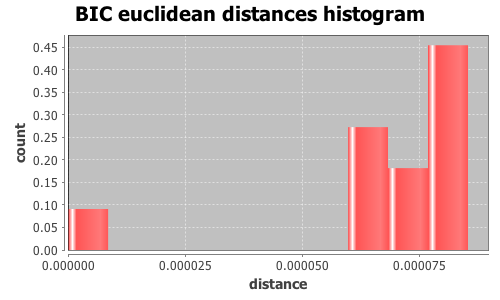
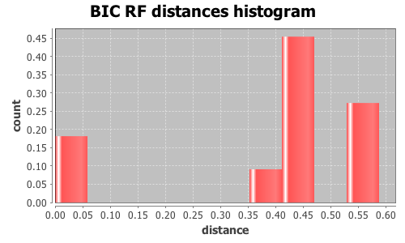

Application Meta
jModeltest 2.1
(c) 2011-onwards D. Darriba, G.L. Taboada, R. Doallo and D. Posada,(1) Department of Biochemistry, Genetics and Immunology
University of Vigo, 36310 Vigo, Spain.
(2) Department of Electronics and Systems
University of A Coruna, 15071 A Coruna, Spain.
e-mail: ddarriba@udc.es, dposada@uvigo.es
Wed Nov 16 20:40:14 CET 2016
Mac OS X 10.12, arch: x86_64, bits: 64, numcores: 4
| Citation: | Darriba D, Taboada GL, Doallo R and Posada D. 2012. "jModelTest 2: more models, new heuristics and parallel computing". Nature Methods 9, 772. |
 Back to top
Back to top Settings
Arguments = -d results/topaza_allele_alignments_selections/random_150/uce-5730_phased.nexus -i -g 4 -s 3 -BICInput Alignment: "results/topaza_allele_alignments_selections/random_150/uce-5730_phased.nexus"
NumTaxa = 20
Length = 882
Phyml version = 3.0
Phyml binary = PhyML_3.0_macOS_i386
Candidate models = 12
number of substitution schemes = 3
including only models with equal base frequencies
including models with/without a proportion of invariable sites (+I)
including models with/without rate variation among sites (+G) (nCat = 4)
Optimized free parameters (K) = Substitution parameters + 37 branch lengths + topology
Base tree for likelihood calculations = Maximum Likelihood
Tree topology search operation = Best of {NNI, SPR}
Model Optimization Results
| ID | Name | Partition | -lnL | p | fA | fC | fG | fT | ti/tv | R(a) | R(b) | R(c) | R(d) | R(e) | R(f) | p-inv | shape |
|---|---|---|---|---|---|---|---|---|---|---|---|---|---|---|---|---|---|
| 1 | JC | 000000 | 1285.3492 | 38 | - | - | - | - | - | - | - | - | - | - | - | - | - |
| 2 | JC+I | 000000 | 1285.3467 | 39 | - | - | - | - | - | - | - | - | - | - | - | 0.1870 | - |
| 3 | JC+G | 000000 | 1285.3446 | 39 | - | - | - | - | - | - | - | - | - | - | - | - | 8.0900 |
| 4 | JC+I+G | 000000 | 1285.3459 | 40 | - | - | - | - | - | - | - | - | - | - | - | 0.1360 | 99.8350 |
| 5 | K80 | 010010 | 1285.2168 | 39 | - | - | - | - | 0.3322 | - | - | - | - | - | - | - | - |
| 6 | K80+I | 010010 | 1285.2141 | 40 | - | - | - | - | 0.3320 | - | - | - | - | - | - | 0.1870 | - |
| 7 | K80+G | 010010 | 1285.2122 | 40 | - | - | - | - | 0.3320 | - | - | - | - | - | - | - | 8.0900 |
| 8 | K80+I+G | 010010 | 1285.2133 | 41 | - | - | - | - | 0.3318 | - | - | - | - | - | - | 0.1360 | 99.8350 |
| 9 | SYM | 012345 | 1281.6594 | 43 | - | - | - | - | - | 0.0003 | 0.0003 | 0.5376 | 0.4030 | 0.6358 | 1.0000 | - | - |
| 10 | SYM+I | 012345 | 1281.6599 | 44 | - | - | - | - | - | 0.0004 | 0.0004 | 0.5373 | 0.4028 | 0.6355 | 1.0000 | 0.0280 | - |
| 11 | SYM+G | 012345 | 1281.6606 | 44 | - | - | - | - | - | 0.0004 | 0.0004 | 0.5372 | 0.4017 | 0.6356 | 1.0000 | - | 6.9660 |
| 12 | SYM+I+G | 012345 | 1281.6605 | 45 | - | - | - | - | - | 0.0004 | 0.0004 | 0.5373 | 0.4017 | 0.6354 | 1.0000 | 0.2000 | 99.8380 |
There are 7 different topologies. The following table shows the models supporting each topology and the rank according to each Information Criterion, as well as Robinson-Foulds and Euclidean distances with the tree of the best-fit model.
| ID | Models | Topology | AIC | BIC | AICc | DT | |
|---|---|---|---|---|---|---|---|
| 0 |
JC K80
|
RANK | - | 0 | - | - | |
| Weight | - | 0.9357 | - | - | |||
| RF | - | 0 | - | - | |||
| AVG Distance | - | 7.4497e-07 | - | - | |||
| Distance VAR | - | 5.5497e-13 | - | - | |||
| 1 |
SYM
|
RANK | - | 1 | - | - | |
| Weight | - | 0.0000 | - | - | |||
| RF | - | 2 | - | - | |||
| AVG Distance | - | 2.1501e-03 | - | - | |||
| Distance VAR | - | 0.0000e+00 | - | - | |||
| 2 |
SYM+I+G
|
RANK | - | 2 | - | - | |
| Weight | - | 0.0000 | - | - | |||
| RF | - | 12 | - | - | |||
| AVG Distance | - | 2.8835e-03 | - | - | |||
| Distance VAR | - | 0.0000e+00 | - | - | |||
| 3 |
JC+I K80+I
|
RANK | - | 3 | - | - | |
| Weight | - | 0.0316 | - | - | |||
| RF | - | 14 | - | - | |||
| AVG Distance | - | 2.1507e-03 | - | - | |||
| Distance VAR | - | 5.4212e-15 | - | - | |||
| 4 |
JC+G K80+G SYM+G
|
RANK | - | 4 | - | - | |
| Weight | - | 0.0317 | - | - | |||
| RF | - | 14 | - | - | |||
| AVG Distance | - | 2.9034e-03 | - | - | |||
| Distance VAR | - | 1.9630e-12 | - | - | |||
| 5 |
SYM+I
|
RANK | - | 5 | - | - | |
| Weight | - | 0.0000 | - | - | |||
| RF | - | 18 | - | - | |||
| AVG Distance | - | 2.8749e-03 | - | - | |||
| Distance VAR | - | 0.0000e+00 | - | - | |||
| 6 |
JC+I+G K80+I+G
|
RANK | - | 6 | - | - | |
| Weight | - | 0.0011 | - | - | |||
| RF | - | 20 | - | - | |||
| AVG Distance | - | 2.4853e-03 | - | - | |||
| Distance VAR | - | 1.5982e-14 | - | - |
BIC Selection Results
Model selected
| Model | JC | ||
|---|---|---|---|
| partition | 000000 | ||
| -lnL | 1285.3492 | ||
| K | 38 | ||
| freqA | - | R(a) | - |
| freqC | - | R(b) | - |
| freqG | - | R(c) | - |
| freqT | - | R(d) | - |
| ti/tv | - | R(e) | - |
| R(f) | - | ||
| p-inv | - | gamma | - |
Best model tree
(Florisuga_0:0.00000001,Florisuga_1:0.00000643,((T_pella6_0:0.00000069,(T_pella6_1:0.00000026,(T_pyra3_1:0.00000001,(T_pyra3_0:0.00000001,(T_pella5_0:0.00151425,(T_pyra2_0:0.00000001,(T_pyra1_1:0.00000015,(T_pyra1_0:0.00000001,T_pyra2_1:0.00000001):0.00000001):0.00000009):0.00000004):0.00075240):0.00000013):0.00019911):0.00014937):0.00005047,(T_pella7_0:0.00000001,((T_pella9_1:0.00114635,T_pella7_1:0.00000001):0.00000001,(T_pella8_0:0.00000001,((T_pella9_0:0.00000001,(T_pella5_1:0.00000013,T_pella8_1:0.00000001):0.00000011):0.00000001,(T_pyra4_1:0.00000001,T_pyra4_0:0.00000012):0.00000013):0.00000043):0.00000045):0.00000068):0.00000010):0.00573277);
Display best model tree in PhyloWidget
| Model | -lnL | K | BIC | delta | weight | cumWeight |
|---|---|---|---|---|---|---|
| JC | 1285.3492 | 38 | 2828.4217 | 0.0000 | 0.9011 | 0.9011 |
| K80 | 1285.2168 | 39 | 2834.9391 | 6.5174 | 0.0346 | 0.9357 |
| JC+G | 1285.3446 | 39 | 2835.1948 | 6.7731 | 0.0305 | 0.9662 |
| JC+I | 1285.3467 | 39 | 2835.1990 | 6.7773 | 0.0304 | 0.9966 |
| K80+G | 1285.2122 | 40 | 2841.7120 | 13.2903 | 0.0012 | 0.9978 |
| K80+I | 1285.2141 | 40 | 2841.7159 | 13.2942 | 0.0012 | 0.9989 |
| JC+I+G | 1285.3459 | 40 | 2841.9794 | 13.5577 | 0.0010 | 1.0000 |
| K80+I+G | 1285.2133 | 41 | 2848.4965 | 20.0748 | 0.0000 | 1.0000 |
| SYM | 1281.6594 | 43 | 2854.9531 | 26.5314 | 0.0000 | 1.0000 |
| SYM+I | 1281.6599 | 44 | 2861.7363 | 33.3146 | 0.0000 | 1.0000 |
| SYM+G | 1281.6606 | 44 | 2861.7377 | 33.3160 | 0.0000 | 1.0000 |
| SYM+I+G | 1281.6605 | 45 | 2868.5197 | 40.0980 | 0.0000 | 1.0000 |
| -lnL: | negative log likelihod |
| K: | number of estimated parameters |
| BIC: | Bayesian Information Criterion |
| delta: | BIC difference |
| weight: | BIC weight |
| cumWeight: | cumulative BIC weight |
Confidence interval
There are 12 models in the 100.00% confidence interval:
JC K80 JC+G JC+I K80+G K80+I JC+I+G K80+I+G SYM SYM+I SYM+G SYM+I+G

Euclidean distances histogram from each model optimized tree to JC tree.
Euclidean distances histogram from each model optimized tree to JC tree.

Relative Robinson-Foulds distances histogram from the different topologies to JC topology.
Relative Robinson-Foulds distances histogram from the different topologies to JC topology.